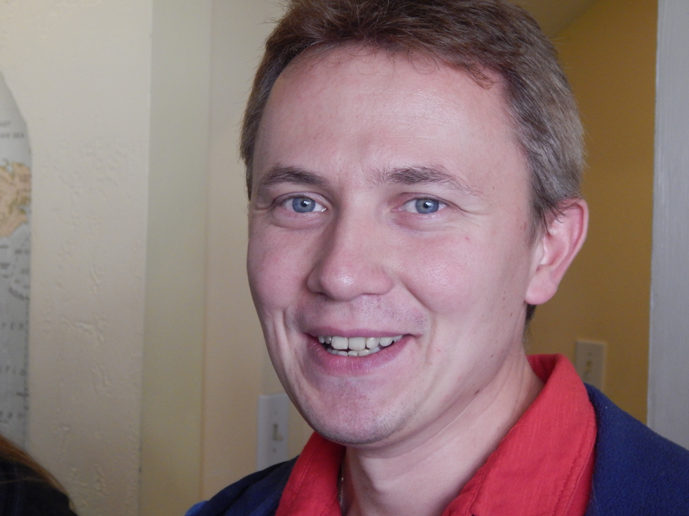
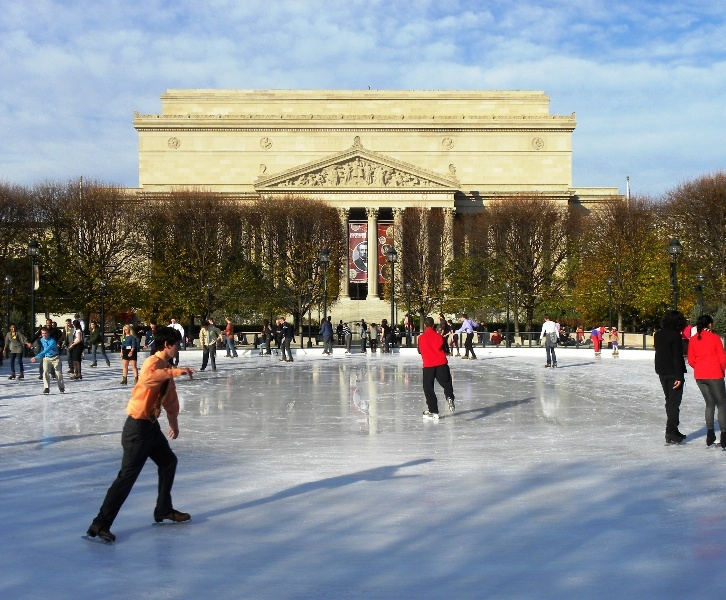
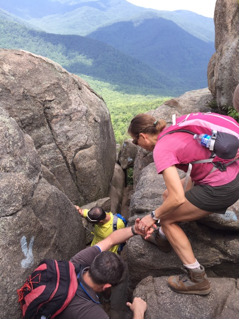
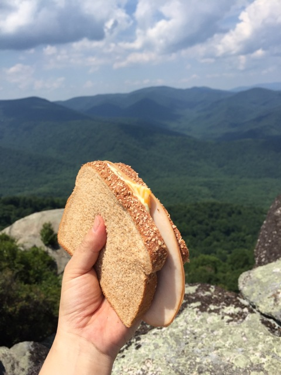
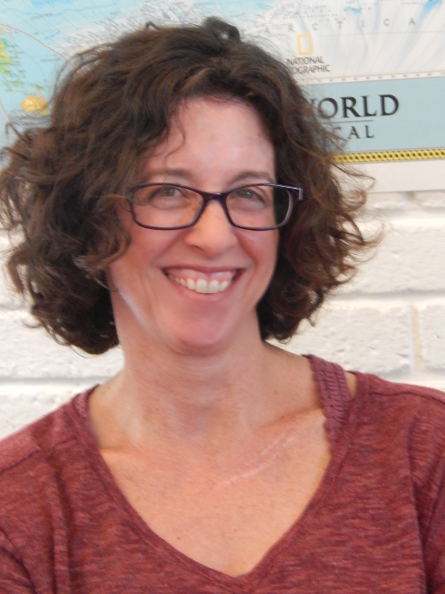

Greetings from English Now!

Welcome to ENcompass, which provides information and ideas to English Now! friends and family around the world. Whether you were a student with us years ago or you are a friend in the Washington, D.C., international community, it brings us joy to reach out to you today.
We are not a large school, but we take a special approach to language education. ENcompass is our effort to reach out a bit more broadly than ever before. We hope you enjoy these articles. If you are an alumni now back in your home country, you can also "see" some of the school in photos, or you may enjoy a short video of our school (see here) or of our classes (see here).
By the way, we call this "ENcompass" because one of the meanings of the word "encompass" is "to include a wide range of ideas." English Now! is a special place because we welcome people from many nations, cultures, and languages. We all grow through the experience. We thank you for your part in the English Now! story and are glad to be with you!
In addition to the articles below, please see here for great ideas and information from past issues of ENcompass.
Warmest Regards -
Paul Boesen
Understanding U.S. Universities and the TOEFL Test

Some of our students want to study in the United States, at a college or university, and we are frequently asked about admissions requirements and college application processes. In addition, many students ask us about the TOEFL (or other) English language examinations required by American universities.
We have prepared a resource for students that will help you think about pursuing higher education in the United States. Please feel free to download our U.S. Higher Education FAQ document, which addresses many of the common questions that people ask. For example, what is the difference between a college and a university? What are the TOEFL or other test requirements for undergraduate or graduate programs, in the U.S.?
We are honored to have helped many students prepare for college or university in the United States and wish you well, if you are on this path!
Spotlight on a Student: Yuriy
Where did you grow up?
I grew up in Ukraine in Chernobyl. Until age 23 I lived there. After high school, I finished seven years of seminary in Ukraine. After that I was sent to Italy for continuing my studies. I was there for five years. I got married in Ukraine last September. We decided to take the opportunity to move to the US in January 2015.
How long have you been studying English?
I’ve been studying English since high school but I didn’t take good classes in Ukraine. I had many different teachers. I wasn’t thinking about moving to another country so I didn’t learn English very well. Only in Italy I started to learn more English because I had to read and go to conferences in English. I learned Italian and English at the same time. I learned Italian because all my studies in Italy were in Italian. I am working toward my doctorate in in Italian now. My English vocabulary was poor and I couldn’t speak well. But when I came here I started to improve my English at a higher level.
Why did you decide to come to the U.S. to study English?
We thought about U.K. or the U.S. because my wife speaks English very well and we decided to move here. I wanted to study here and I thought it would be helpful for my dissertation because I am writing about palliative care and in America you have a lot of good schools and experience about palliative care. I am taking classes about palliative care and chaplaincy.
How is learning English here different from your experience in the Ukraine?
So different. Here I have English-speaking teachers and I learn only in English. In Ukraine, our teachers usually were Ukrainian and English was their second language. They didn’t have very good pronunciation in English. Here I have time and opportunity to speak in English and live in an English speaking area.
You have also been working as a lifeguard during your time in the D.C. area. How were you able to get that work? What was your most interesting day on the job?
I knew one Ukrainian person who told me about this opportunity. I spoke with the supervisor who is also from Ukraine. He told me how to take courses to get a certificate. I like to swim and I like this job. For this moment it’s helpful for me, I am able to earn something while I take courses. This job gives me this opportunity.
My most interesting day was when there was a whole soccer team in the pool. It was fun but dangerous because like all kids they wanted to run and play and jump. It was fun but also hard because I felt responsibility to them.
Can you describe something about American culture that was surprising to you when you first came to the U.S.?
Celebrating Thanksgiving was surprising because we don’t have this holiday in Ukraine and I didn’t see it in Italy. It was interesting because of the culture and tradition. It was new and interesting.
Can you remember anything that was difficult when you first arrived, but not so difficult now?
Language. I couldn’t explain myself and I couldn’t speak with other people, It was very difficult, Now I can do it and I am happy I can do it. I like to have conversation with other people. In that moment I can learn more about their culture and mentality.
Can you describe your interest in Pastoral Counseling? What is the next step in your career?
It began in my schools in Ukraine and Italy. I was interested in helping sick people. I was feeling like I can do it and I like to do it. I had had some experience in Italy as a volunteer. I was a member of the palliative team in Rome. I like it very much. I had this idea to take classes here. I was accepted to the Association of Clinical Pastoral Counseling in Rockville and will begin courses in January. I am doing this while I continue working toward my doctorate in Italy. I will need to return to defend my dissertation. My topic is psychological and spiritual aspect in the development of palliative care in Ukraine.
Do you have any advice for other people who come to the Washington D.C. area to study English?
These English classes are amazing for me. They are very helpful for anybody who would like to improve their English. The atmosphere is very friendly with all the classes. I learned a lot about American culture. I had English classes before at the library and other places, but here I think it’s a wonderful place.
Things To Do in the Winter…
Ice Skating
WASHINGTON HARBOUR ICE RINK
3000 K Street NW, Washington, DC 20007
This is the newest and largest ice skating rink in Washington, DC--even bigger than New York City’s Rockefeller Center rink! Washington Harbour (in Georgetown) spends most of the year centered on a beautiful fountain surrounded by half a dozen restaurants. But in the winter, the fountain magically transforms into an ice skating rink. It’s best after dark when dozens of twinkling white snowflakes light up and the rink is bathed in glorious light. Since it’s only open from November thru March (weather permitting), this ice rink is always busy - including on Christmas Day!
- See more at: http://www.thewashingtonharbour.com/ice-skating.
TYSONS CORNER CENTER ICE RINK
Tysons Corner Center, McLean, VA
Also new in the DC area is the outdoor ice rink at Tysons Corner Center mall. Combine Christmas shopping with a bit of fun! The Tysons Corner Center Ice Rink is located on the plaza between Lord & Taylor and Hyatt Regency. The Skate Shop (for skate rentals) is located inside, 2nd floor next to Lord & Taylor. Open every day and all holidays, November through early March (weather permitting). There are extended hours during the holidays, too. See website below for exact schedule. Note: lessons are also available!
- See more at: http://www.tysonscornericerink.com/
NATIONAL GALLERY OF ART SCULPTURE GARDEN ICE RINK
9th St. and Constitution Ave. NW, Washington, DC 20001
The National Gallery of Art Sculpture Garden ice rink is a long-time tradition for many people. Located in the center of the gallery’s outdoor Sculpture Garden, on the National Mall, this ice skating rink is perfect as with just a friend, or with the whole family during the holidays. Since it can get very busy during this season, tickets are sold in two-hour sessions beginning on the hour. So, if you can, buy your ticket first and, if you have time, visit the works of art in the surrounding Sculpture Garden or grab a hot chocolate in the Pavilion Café until it is your ticket time. The rink opens Nov. 14 and is available for practicing your axel jumps until March 15 (weather permitting).
- See more at: http://www.nga.gov/content/ngaweb/visit/ice-rink.html
Three Great Things that I Experienced While Hiking and Camping
Emiko Araki
In August, 2015, Paul, other students and their families, and I went hiking and camping in Virginia, and this became one of the unforgettable events in my life. I will describe three great things that I experienced in the hiking and camping.
1. Teamwork
The mountain where we went hiking was rocky and we had to climb up on the rocks many times that were taller than our height. When I could not climb up by myself, Paul or other strong friends always pulled up my arms. When I was very tired and could not go forward, a friend of mine asked me, "May I bring your backpack?”. When some children were tired and did not want to walk, other children and teens encouraged them. Thanks to this wonderful teamwork, we all could reach the top of the mountain. I could not enjoy this feeling of accomplishment without my great teammates. The sandwiches that I ate at the top of the mountain were the most delicious I have ever eaten.
2. Warmth of fire
At night, we enjoyed a campfire. Sitting around it, we enjoyed drinking wine, eating s'mores, and talking. There were no electric lights, so the only thing I could see was the fire. When I was watching it and talking with others, I could really relax after the hard day of hiking. Until this time, I did not know that the fire was so warm and made me stay relaxed.
3. Nature
I was surprised by Paul and his daughter walking around with their bare feet in the campground. It seemed to feel great, so I should have walked without shoes too. On the night of camping, I saw some fireflies flying. The next morning, we went to a stream in the campground and walked in it. The cold stream cooled my tired foot muscles down, and I felt great! All of these were amazing for me since I cannot have these experiences in my hometown, Tokyo.
I met some people who I went with the hiking and camping for the first time on the day of hiking. However, after hiking and camping, I felt that I have known them for a long time. I would like to express my deepest gratitude to Paul and others for giving me these wonderful, exciting experiences.
Emiko Araki has been a student at English Now! since November, 2014. In Japan, she was a patent engineer in chemistry and molecular biology fields at Shiga International Patent Office, and instructor at Tokyo College of Biotechnology. Currently, Emiko studies molecular biology at the National Institutes of Health (NIH). In her spare time, Emiko enjoys running and spending time with her husband and cat, Mi.
Welcome to Our International Cookbook!

We enjoy sharing a meal together once a month, at our potluck lunches. Our monthly potluck lunch, on the second Thursday of each Intensive English Program term, is consistently one of our students' most enjoyable experiences. Sharing a meal is a special experience, for all peoples and in all cultures.
As a small part of this experience, we also enjoy sharing great recipes with each other and - onour online International Cookbook - with you. Please try one of these dishes, and we inviteadditional suggestions about great food from around the world: submit your ownrecipe! Please contact us for information about how to submit a recipe.
Visit to National Public Radio (NPR)

Media plays a special role in studying languages, and also how we understand the world. We are all consumers of media - print, online, video, etc. Our worldviews are shaped by the media we consume, and our language develops based on media, including whether we consume media in English or other languages!
Recently, students in our Intensive English Program participated in a Lunchtime Talk about news media and using online news resources for improving English. We prepared a handoutthat we would love to share with you. In addition, we enjoy sharing a special media outing with you, in the Washington, D.C., area. On Friday, February 26th at 10:00am, we will be visiting the National Public Radio (NPR). Contact us to ask if there are any spaces available - there is a limit, so contact us soon if you'd like to join this outing!
Spotlight on a Teacher: Alison McCaul
How long have you taught at English Now?
I started in 2008 -- just around the time Paul Boesen bought the school.
What is your favorite part of teaching English?
The students, especially watching their relationships develop at English Now. When you bring these multiple cultures into a room together, there is this kind of awkward silence on the first day. And then as they come in each day, they get more and more familiar with each other and they are no longer just studying, but building relationships as well.
What did you do before you began teaching at English Now?
I was starting my family. I was living overseas for my husband’s job: first in Madagascar in 2001 and then we moved directly to India. My husband works for the World Bank as an agriculture economist.
Can you tell us a bit about your experiences with your family first in Madagascar and then in India?
Well, I had three babies back then [in Madagascar]. I went with a 4 month old baby, and then I had my twins while we were living there (they are just one year apart). We traveled a lot in Madagascar. I remember our last trip in Madagascar -- my kids were 3 and 4 years old -- and it was raining and they had on their little rain jackets -- and we walked into this forest with a guide and we could see these huge lemurs just jumping from the trees. It was fantastic! Madagascar was a very special place.
And then we were in Delhi. We went from a country of 16 million to a city of 16 million. And that’s when I started teaching. My kids went to the American embassy school and I started doing substitute teaching there, some ESL but mostly classroom teaching. And we took loads of trips all over India -- by trains, planes, and automobiles. One of our favorite places was Gujarat. We went to a lion park there, where we saw baby lion cubs being born and my daughter was the first one to see them and she was in the newspaper. The national parks were fabulous.
So how did you first get into teaching English?
After graduating college, I worked for the IMF [International Monetary Fund] as a research analyst in Washington DC. After 8 years, I decided I wanted to experience life outside an office. So I started doing volunteer work as a Montgomery County literacy volunteer and I taught a Chinese lady once a week. And then later I found out about the JET (Japanese English Exchange) Program through the Japanese Ministry of Education.
I applied and was accepted. I lived 2 years in a village in Emukae, Nagasaki prefecture. My apartment was surrounded by rice paddies. The third year on JET I lived in Nagasaki city. My apartment was on top of the mountain with a fabulous view of the harbor. I have very fond memories of Japan.
Where did you grow up?
I grew up here: McLean, Virginia; and DC. I’ve always been involved in international work, so DC was a logical place to be based after college.
What other countries have you lived in?
In addition to living in Japan, Madagascar and India, as a child I lived in Taiwan.
What countries would you like to go to where you haven’t been?
I would like to go visit places in South America. I’ve been to Colombia, but I haven’t been elsewhere in South America. I particularly want to visit my friend in Argentina. What do you like to do in your free time?
I like to do yoga, swim, bike, and take long walks my dog. I like traveling with my husband and three teenage kids. We love maps and my kids like to mark all the places they’ve visited.
We hope that you have enjoyed your time with ENcompass. Please let us know if you have any suggestions for future ideas and information we might provide to our family and friends around the world, online!